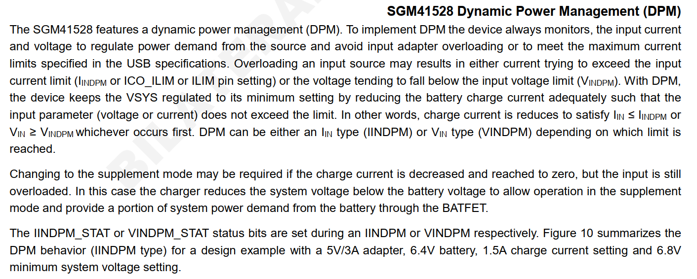

qcom qcm2290 charger SGM41528调试记录
记录一下M92xx项目双节升压充电charger驱动调试。
简介
随着电子产品输出功率的不断提高，单节电池所能提供的输出功率已经不能满足这些高功率产品的需求，因此两节、三节甚至更多节电池串联的供电的方案得以大量应用，如移动POS机、数码相机、蓝牙音箱、便携式打印机、无人机、机器人、电动工具等，伴随而来的是为这些串联电池包提供充电的方案需求。在各种拓扑架构的开关充电方案中，高压输入降压方案需配置专用适配器，高压输入降压-升压方案的成本太高，低压5V输入升压方案就非常适合为两节锂电池提供充电。
圣邦微电子推出的SGM41528就是这样一颗5V输入可为两节串联锂电池提供2A充电及路径管理的芯片，具有完整的涓流预充、恒流、恒压充电流程和浮充定时功能，可在双节锂电池的POS机、蓝牙音箱等电子产品中使用，它可以适配几乎任何USB接口的适配器。SGM41528支持免适配器的产品配置，为厂商和终端用户节约了成本，更为人类环保事业增添一抹绿色。
SGM41528典型特性
输入耐压：20V（最大值）；
输入工作电压：3.9V至6.2V；
充电电流：100mA至2.2A，50mA步进；
满充电压：6.8V至9.2V，10mV步进；
充电效率：92.5%@1A，VBAT = 7.6V；
最大反向Buck模式OTG电流：2A；
OTG放电效率：94.5%@5V，1A；
支持脉冲频率调制（PFM）轻载高效模式；
轻载Out-of-Audio模式可选；
完整的涓流预充、恒流、恒压充电流程；
可配置的浮充定时功能；
BC1.2，自动识别SDP、CDP、DCP和非标适配器；
输入电压、输入电流动态功率跟踪；
适配器最大功率跟踪功能；
窄电压直流充电（NVDC）功率路径管理；
BATFET导通阻抗13mΩ；
16-Bit ADC监控各电压、电流、负温度系数（NTC）、结温；
可编程JEITA；
灵活易用的I2C接口；
高精度满充电压；
高精度恒流电流；
过热、过流、过压、短路等多重安全保护；
符合环保理念的WLCSP-2.1×2.1-25B绿色封装。
SGM41528典型应用电路

FUNCTIONAL BLOCK DIAGRAM

SGM41528集成16-Bit高精度ADC
ADC转换速度可调；
ADC有效分辨率可调；
IBUS：0A至4A，1mA步进；
ICHG：0A至4A，1mA步进；
VBUS：0V至6.5V，1mV步进；
VBAT：0V至10V，1mV步进；
VSYS：0V至10V，1mV步进；
VTS：0%至94.9% (of VREG)，0.098%步进；
VTDIE：0℃至128℃，0.5℃步进。
mp2721差异化对比
我们已经搭建好了xxx-charger架构，所以只需要将mp2721驱动拷贝一份配置不同寄存器即可，对比一下差异化的地方。
HIZ
bms中power_path功能由HIZ取代，EN_HIZ是开启高阻态，从框架图中可知，如果进入高阻态，VBUS的电就过不来了，系统由电池供电。
从FUNCTIONAL BLOCK DIAGRAM图中可以看到ic有OVP等保护功能，从datasheet上看，只要进入保护状态，则ic进入HIZ模式。

翻译： OVP连续7次失败后，设备设置 EN_HIZ = 1，并进入 HIZ 模式。 当设备处于工作状态时，此时电池为系统供电。 需要重新插入适配器或者EN_HIZ 位切换才能重新启动设备操作。 EN_HIZ 位自动清零
电池充电情况
0~20度 0.2C(560ma)电流充分充至8.7v满充。
20~45度 0.7(1960ma)电流充分充至8.7v满充。
持续放电电流：4A -10~60度
放电截止电压：6v
充电截止电压：8.7v


Dynamic Power Management (DPM)

翻译：
SGM41528 具有动态电源管理 (DPM)。 为实施 DPM，设备始终监控输入电流和电压，以调节来自电源的功率需求并避免输入适配器过载或满足 USB 规范中指定的最大电流限制输入源过载可能导致电流试图超过输入电流限制（IINDPM 或 ICO_ILIM 或 ILIM 引脚设置）或电压趋于低于输入电压限制 (VINDPM)。 有了DPM，该设备通过充分降低电池充电电流使VSYS保持在其最小设置，从而使输入参数（电压或电流）不超过限制。
换句话说，充电电流减小以满足 IIN ≤ IINDPM 或 VIN ≥ VINDPM，以先发生者为准。 DPM 可以是 IIN 类型 (IINDPM) 或 VIN 类型 (VINDPM)，具体取决于达到的限制。
如果充电电流减小并达到零，但输入仍然过载，则可能需要更改为补充模式。 在这种情况下，充电器将系统电压降低到电池电压以下，以允许在补充模式下运行，并通过 BATFET 从电池提供部分系统功率需求。 IINDPM_STAT 或 VINDPM_STAT 状态位分别在 IINDPM 或 VINDPM 期间设置。 图 10 总结了具有 5V/3A 适配器、6.4V 电池、1.5A 充电电流设置和 6.8V 最小系统电压设置的设计示例的 DPM 行为（IINDPM 类型）。
注意中间的Supplement表示电池补充模式。
问题分析
1.异常断开，电流变成0A
设置的1A充电，vbus门限电压设置的4.4V，vbus掉到4.6v就断开了，ibus电流为0 打印如下：
[ 410.224935] xxx_CHG: CHG [online: 1, type: DCP, status: Charging, fault: 0x0,AICR = 1000mA, MIVR = 4400mV, IEOC = 250mA, CV = 8700mV,ICHG = 1000mA, IBAT = 426mA, VBAT = 7638mV, IBUS = 891mV, VBUS = 4814mV, VSYS = 7671mV]
[ 410.337102] xxx_BMS: CHG [online: 1, type: 5, vol: 4812000, cur: 895000, time: 0], BAT [present: 1, status: 3, vol: 7564000, cur: 467000, resistance: 0, temp: 240, soc: 12], OTHER [skin_temp: 0, chg_vote: 0x0, notify_code: 0x0],
[ 410.358994] xxx_CHG: charger_pm_event: enter PM_SUSPEND_PREPARE
[ 410.378193] Freezing of tasks aborted after 0.013 seconds
[ 410.397230] xxx_CHG: charger_pm_event: enter PM_POST_SUSPEND
[ 410.619686] xxx_CHG: charger_pm_event: enter PM_SUSPEND_PREPARE
[ 410.665280] xxx_BMS:bms_suspend. secs = 21900
[ 410.795189] xxx_CHG: xxx_charger_alarm_timer_func: alarm timer timeout
[ 410.916964] xxx_BAT: xxx_battery_resume: pre_soc: 12 soc: 12
[ 410.922614] [xxx_GAUGE] cw2017_i2c_check: cw2017 version = 0xf
[ 410.926457] xxx_BAT: [status:Charging, health:Good, present:1, tech:Li-ion, capcity:12,cap_rm:336 mah, vol:7570 mv, temp:24, curr:463 ma, ui_soc:12]
[ 410.928952] [soft_i][0x24ca50250][09:48:10.799202] wlan: [0:F:WMA] Non-WLAN triggered wakeup: UNSPECIFIED (-1)
[ 411.001157] xxx_CHG: charger_pm_event: enter PM_POST_SUSPEND
[ 411.006899] xxx_CHG: charger_pm_event: alarm timeout, wake up charger
[ 411.006948] xxx_CHG: xxx_is_charger_on chr_type = [DCP] last_chr_type = [DCP]
[ 411.023849] xxx_CHG: [SW_JEITA] Battery Normal Temperature between 20 and 45 !!
[ 411.031482] xxx_CHG: [SW_JEITA]preState:3 newState:3 tmp:24 cv:0
[ 411.037909] xxx_CHG: tmp:24 (jeita:1 sm:3 cv:0 en:1) thm_sm:1 en:1 can_en:1
[ 411.046846] xxx_CHG: chg:-1,-1,1000,1000 type:5:0 aicl:-1 bootmode:0 pd:0
[ 411.054015] xxx_CHG: do_algorithm input_current_limit:1000 charging_current_limit:1000
[ 411.074647] xxx_CHG: CHG [online: 0, type: DCP, status: Not charging, fault: 0x0,AICR = 1000mA, MIVR = 4400mV, IEOC = 250mA, CV = 8700mV,ICHG = 1000mA, IBAT = 398mA, VBAT = 7701mV, IBUS = 32257mV, VBUS = 4624mV, VSYS = 7722mV]
第二次：
[ 543.361278] xxx_CHG: CHG [online: 1, type: DCP, status: Charging, fault: 0x0,AICR = 1000mA, MIVR = 4400mV, IEOC = 250mA, CV = 8700mV,ICHG = 1000mA, IBAT = 407mA, VBAT = 7732mV, IBUS = 890mV, VBUS = 4820mV, VSYS = 7736mV]
[ 543.517995] xxx_CHG: charger_pm_event: enter PM_SUSPEND_PREPARE
[ 543.565015] xxx_BMS:bms_suspend. secs = 25500
[ 543.694984] xxx_CHG: xxx_charger_alarm_timer_func: alarm timer timeout
[ 543.816800] xxx_BAT: xxx_battery_resume: pre_soc: 13 soc: 13
[ 543.821906] [xxx_GAUGE] cw2017_i2c_check: cw2017 version = 0xf
[ 543.825755] xxx_BAT: [status:Charging, health:Good, present:1, tech:Li-ion, capcity:13,cap_rm:364 mah, vol:7608 mv, temp:24, curr:421 ma, ui_soc:13]
[ 543.827969] [soft_i][0x5c01ee3c9][10:01:02.792394] wlan: [0:F:WMA] Non-WLAN triggered wakeup: UNSPECIFIED (-1)
[ 543.895311] xxx_CHG: charger_pm_event: enter PM_POST_SUSPEND
[ 543.901001] xxx_CHG: charger_pm_event: alarm timeout, wake up charger
[ 543.907703] xxx_CHG: xxx_is_charger_on chr_type = [DCP] last_chr_type = [DCP]
[ 543.917448] xxx_CHG: [SW_JEITA] Battery Normal Temperature between 20 and 45 !!
[ 543.925288] xxx_CHG: [SW_JEITA]preState:3 newState:3 tmp:24 cv:0
[ 543.931664] xxx_CHG: tmp:24 (jeita:1 sm:3 cv:0 en:1) thm_sm:1 en:1 can_en:1
[ 543.940257] xxx_CHG: chg:-1,-1,1000,1000 type:5:0 aicl:-1 bootmode:0 pd:0
[ 543.947339] xxx_CHG: do_algorithm input_current_limit:1000 charging_current_limit:1000
[ 543.977155] xxx_CHG: CHG [online: 0, type: DCP, status: Not charging, fault: 0x0,AICR = 1000mA, MIVR = 4400mV, IEOC = 250mA, CV = 8700mV,ICHG = 1000mA, IBAT = 0mA, VBAT = 7735mV, IBUS = 0mV, VBUS = 4624mV, VSYS = 7732mV]
75%电量也掉电：
[ 4473.573797] xxx_CHG: vbat = 4161 set mivr = 4400
[ 4473.585719] xxx_CHG: CHG [online: 1, type: DCP, status: Charging, fault: 0x0,AICR = 1000mA, MIVR = 4400mV, IEOC = 250mA, CV = 8700mV,ICHG = 1000mA, IBAT = 351mA, VBAT = 8453mV, IBUS = 877mV, VBUS = 4743mV, VSYS = 8474mV]
[ 4476.013166] xxx_BMS: CHG [online: 1, type: 5, vol: 4744000, cur: 873000, time: 4164], BAT [present: 1, status: 1, vol: 8320000, cur: 346000, resistance: 0, temp: 220, soc: 75], OTHER [skin_temp: 0, chg_vote: 0x0, notify_code: 0x0],
[ 4478.531891] xxx_CHG: xxx_is_charger_on chr_type = [DCP] last_chr_type = [DCP]
[ 4478.552279] xxx_CHG: [SW_JEITA] Battery Normal Temperature between 20 and 45 !!
[ 4478.559617] xxx_CHG: [SW_JEITA]preState:3 newState:3 tmp:22 cv:0
[ 4478.565763] xxx_CHG: tmp:22 (jeita:1 sm:3 cv:0 en:1) thm_sm:1 en:1 can_en:1
[ 4478.573668] xxx_CHG: chg:-1,-1,1000,1000 type:5:0 aicl:-1 bootmode:0 pd:0
[ 4478.580855] [xxx_GAUGE] cw2017_i2c_check: cw2017 version = 0xf
[ 4478.586955] xxx_CHG: do_algorithm input_current_limit:1000 charging_current_limit:1000
[ 4478.601597] xxx_CHG: vbat = 4156 set mivr = 4400
[ 4478.602152] xxx_BAT: [status:Not charging, health:Good, present:1, tech:Li-ion, capcity:75,cap_rm:2100 mah, vol:8312 mv, temp:22, curr:6932 ma, ui_soc:75]
[ 4478.623855] xxx_CHG: CHG [online: 0, type: DCP, status: Not charging, fault: 0x0,AICR = 1000mA, MIVR = 4400mV, IEOC = 250mA, CV = 8700mV,ICHG = 1000mA, IBAT = 283mA, VBAT = 8445mV, IBUS = 877mV, VBUS = 4744mV, VSYS = 8480mV]
[ 4481.052696] xxx_BMS: CHG [online: 1, type: 5, vol: 5033000, cur: 0, time: 0], BAT [present: 1, status: 1, vol: 8312000, cur: 6932000, resistance: 0, temp: 220, soc: 75], OTHER [skin_temp: 0, chg_vote: 0x0, notify_code: 0x0],
[ 4483.539781] xxx_CHG: xxx_is_charger_on chr_type = [DCP] last_chr_type = [DCP]
[ 4483.548103] xxx_CHG: [SW_JEITA] Battery Normal Temperature between 20 and 45 !!
[ 4483.555532] xxx_CHG: [SW_JEITA]preState:3 newState:3 tmp:22 cv:0
[ 4483.561606] xxx_CHG: tmp:22 (jeita:1 sm:3 cv:0 en:1) thm_sm:1 en:1 can_en:1
[ 4483.569544] xxx_CHG: chg:-1,-1,1000,1000 type:5:0 aicl:-1 bootmode:0 pd:0
[ 4483.576447] xxx_CHG: do_algorithm input_current_limit:1000 charging_current_limit:1000
[ 4483.587879] xxx_CHG: vbat = 4113 set mivr = 4400
[ 4483.600039] xxx_CHG: CHG [online: 0, type: DCP, status: Not charging, fault: 0x0,AICR = 1000mA, MIVR = 4400mV, IEOC = 250mA, CV = 8700mV,ICHG = 1000mA, IBAT = 0mA, VBAT = 8217mV, IBUS = 0mV, VBUS = 5030mV, VSYS = 8219mV]
[ 4486.092217] xxx_BMS: CHG [online: 1, type: 5, vol: 5033000, cur: 0, time: 0], BAT [present: 1, status: 1, vol: 8312000, cur: 6932000, resistance: 0, temp: 220, soc: 75], OTHER [skin_temp: 0, chg_vote: 0x0, notify_code: 0x0],
[ 4486.891755] [xxx_GAUGE] cw2017_i2c_check: cw2017 version = 0xf
[ 4486.903104] xxx_BAT: [status:Not charging, health:Good, present:1, tech:Li-ion, capcity:75,cap_rm:2100 mah, vol:8220 mv, temp:22, curr:0 ma, ui_soc:75]
将ITERM改成100ma，AICR = 1000mA也不行：
[ 6292.921992] xxx_CHG: xxx_is_charger_on chr_type = [SDP] last_chr_type = [SDP]
[ 6292.930090] xxx_CHG: [SW_JEITA] Battery Normal Temperature between 20 and 45 !!
[ 6292.937898] xxx_CHG: [SW_JEITA]preState:3 newState:3 tmp:23 cv:0
[ 6292.944383] xxx_CHG: tmp:23 (jeita:1 sm:3 cv:0 en:1) thm_sm:1 en:1 can_en:1
[ 6292.958806] xxx_CHG: chg:-1,-1,1000,500 type:4:0 aicl:-1 bootmode:0 pd:0
[ 6292.967175] xxx_CHG: do_algorithm input_current_limit:1000 charging_current_limit:500
[ 6292.974233] [xxx_GAUGE] cw2017_i2c_check: cw2017 version = 0xf
[ 6292.991354] xxx_BAT: [status:Not charging, health:Good, present:1, tech:Li-ion, capcity:87,cap_rm:4872 mah, vol:4273 mv, temp:23, curr:17162 ma, ui_soc:87]
[ 6293.016638] xxx_CHG: CHG [online: 0, type: SDP, status: Not charging, fault: 0x0,AICR = 1000mA, MIVR = 4400mV, IEOC = 100mA, CV = 8700mV,ICHG = 500mA, IBAT = 323mA, VBAT = 8691mV, IBUS = 865mV, VBUS = 4604mV, VSYS = 8687mV]
[ 6293.536092] xxx_BMS: CHG [online: 1, type: 4, vol: 5102000, cur: 0, time: 0], BAT [present: 1, status: 3, vol: 4273000, cur: 17162000, resistance: 0, temp: 230, soc: 87], OTHER [skin_temp: 0, chg_vote: 0x0, notify_code: 0x0],
[ 6297.929916] xxx_CHG: xxx_is_charger_on chr_type = [SDP] last_chr_type = [SDP]
[ 6297.938110] xxx_CHG: [SW_JEITA] Battery Normal Temperature between 20 and 45 !!
[ 6297.945521] xxx_CHG: [SW_JEITA]preState:3 newState:3 tmp:23 cv:0
[ 6297.951567] xxx_CHG: tmp:23 (jeita:1 sm:3 cv:0 en:1) thm_sm:1 en:1 can_en:1
[ 6297.959367] xxx_CHG: chg:-1,-1,1000,500 type:4:0 aicl:-1 bootmode:0 pd:0
[ 6297.966347] xxx_CHG: do_algorithm input_current_limit:1000 charging_current_limit:500
[ 6297.983496] xxx_CHG: CHG [online: 0, type: SDP, status: Not charging, fault: 0x0,AICR = 1000mA, MIVR = 4400mV, IEOC = 100mA, CV = 8700mV,ICHG = 500mA, IBAT = 0mA, VBAT = 8446mV, IBUS = 0mV, VBUS = 5105mV, VSYS = 8458mV]
[ 6298.580556] xxx_BMS: CHG [online: 1, type: 4, vol: 5091000, cur: 0, time: 0], BAT [present: 1, status: 3, vol: 4273000, cur: 17162000, resistance: 0, temp: 230, soc: 87], OTHER [skin_temp: 0, chg_vote: 0x0, notify_code: 0x0],
[ 6301.300143] [xxx_GAUGE] cw2017_i2c_check: cw2017 version = 0xf
[ 6301.328002] xxx_BAT: [status:Not charging, health:Good, present:1, tech:Li-ion, capcity:87,cap_rm:4872 mah, vol:4228 mv, temp:23, curr:0 ma, ui_soc:87]
以上可能有两种原因：
发生VINDPM/IINDPM，就是vbus小于mivr门限4.4v会发生断充，或者isys过载，但是都是减小或停止ibat充电，不会停止给vsys供电，排除。
电池ibat < iterm（250ma）也会断开充电，但是也不会停止给vsys供电，排除。
结论
后续fae使用USB dongle配合上位机USBDONGLE_V1.0.2.24程序进行测试，软件端关闭所有控制，发现连不上i2c，使用万用表量取SDA/SCL电压是低电平，离谱了，按理说正常都是闲时拉高的，最后发现居然是高通平台的问题，高通使用了rumtime PM电源管理机制，闲置i2c配置为GPIO模式并禁止拉动，也就是gpio模式低电平的意思，经验证，这种方式会让i2c通讯不稳定，极易造成读写错误，由于HIZ寄存器就在ichg一起，经常需要写，可能导致误使能了HIZ，从而断开充电。
最后使用USB dongle也是能正常工作的。
软件修改方案：
--- a/UM.9.15/vendor/qcom/proprietary/devicetree-4.19/qcom/m92xx/scuba-pinctrl.dtsi
+++ b/UM.9.15/vendor/qcom/proprietary/devicetree-4.19/qcom/m92xx/scuba-pinctrl.dtsi
@@ -323,13 +323,13 @@
qupv3_se0_i2c_sleep: qupv3_se0_i2c_sleep {
mux {
pins = "gpio0", "gpio1";
- function = "gpio";
+ function = "qup0";
};
config {
pins = "gpio0", "gpio1";
drive-strength = <2>;
- bias-disable;
+ bias-pull-up;
};
};
};
最终跟到代码，dts里面有一个bool可以关闭配置gpio:
--- a/UM.9.15/kernel/msm-4.19/drivers/i2c/busses/i2c-qcom-geni.c
+++ b/UM.9.15/kernel/msm-4.19/drivers/i2c/busses/i2c-qcom-geni.c
@@ -126,6 +126,7 @@ struct geni_i2c_dev {
enum i2c_se_mode se_mode;
bool cmd_done;
bool is_shared;
+ bool is_i2cpin_suspend;
u32 dbg_num;
struct dbg_buf_ctxt *dbg_buf_ptr;
};
@@ -1028,6 +1029,12 @@ static int geni_i2c_probe(struct platform_device *pdev)
dev_info(&pdev->dev, "Multi-EE usecase\n");
}
+ if (of_property_read_bool(pdev->dev.of_node, "qcom,i2c-pin-suspend")) {
+ gi2c->is_i2cpin_suspend = true;
+ dev_info(&pdev->dev, "i2c suspend by cfg gpio mode\n");
+ }
+
if (of_property_read_u32(pdev->dev.of_node, "qcom,clk-freq-out",
&gi2c->i2c_rsc.clk_freq_out)) {
gi2c->i2c_rsc.clk_freq_out = KHz(400);
@@ -1116,9 +1123,10 @@ static int geni_i2c_runtime_suspend(struct device *dev)
if (gi2c->se_mode == FIFO_SE_DMA)
disable_irq(gi2c->irq);
- if (gi2c->is_shared) {
+ if (gi2c->is_shared || gi2c->is_i2cpin_suspend) {
/* Do not unconfigure GPIOs if shared se */
se_geni_clks_off(&gi2c->i2c_rsc);
} else {
se_geni_resources_off(&gi2c->i2c_rsc);
}
--- a/UM.9.15/vendor/qcom/proprietary/devicetree-4.19/qcom/m92xx/m92xx-scuba-iot-idp-overlay.dts
+++ b/UM.9.15/vendor/qcom/proprietary/devicetree-4.19/qcom/m92xx/m92xx-scuba-iot-idp-overlay.dts
@@ -96,7 +96,8 @@
};
&qupv3_se0_i2c {
status = "okay";
- sgm41528@6b {
+ qcom,i2c-pin-suspend;
+ sgm41528@6b {
rumtime PM电源管理机制请参考：
0029_qcom_qcm2290_i2c_runtime_pm驱动流程.md
96%电流提示充满
Iterm设置的100ma，96%电量充电截止，提示充满
[Tue Dec 13 01:19:07 2022] xxx_CHG: do_algorithm input_current_limit:1000 charging_current_limit:500
[Tue Dec 13 01:19:07 2022] xxx_CHG: CHG [online: 1, type: SDP, status: Charging, fault: 0x0,AICR = 1000mA, MIVR = 4400mV, IEOC = 100mA, CV = 8700mV,ICHG = 500mA, IBAT = 108mA, VBAT = 8740mV, IBUS = 383mV,
VBUS = 4920mV, VSYS = 8769mV]
[Tue Dec 13 01:19:09 2022] xxx_CHG: sgm41528_monitor_workfunc:VIINDPM status = 0
[Tue Dec 13 01:19:09 2022] [xxx_GAUGE] cw2017_i2c_check: cw2017 version = 0xf
[Tue Dec 13 01:19:09 2022] xxx_BAT: [status:Charging, health:Good, present:1, tech:Li-ion, capcity:96,cap_rm:5376 mah, vol:4338 mv, temp:27, curr:107 ma, ui_soc:96]
[Tue Dec 13 01:19:09 2022] healthd: battery l=96 v=4338 t=27.0 h=2 st=2 c=107000 fc=5600000 cc=1 chg=u
[Tue Dec 13 01:19:09 2022] xxx_BMS: CHG [online: 1, type: 4, vol: 4921000, cur: 383000, time: 288], BAT [present: 1, status: 1, vol: 4338000, cur: 107000, resistance: 0, temp: 270, soc: 96], OTHER [skin_te
mp: 0, chg_vote: 0x0, notify_code: 0x0],
[Tue Dec 13 01:19:12 2022] xxx_CHG: xxx_is_charger_on chr_type = [SDP] last_chr_type = [SDP]
[Tue Dec 13 01:19:12 2022] xxx_CHG: [SW_JEITA] Battery Normal Temperature between 20 and 45 !!
[Tue Dec 13 01:19:12 2022] xxx_CHG: [SW_JEITA]preState:3 newState:3 tmp:27 cv:0
[Tue Dec 13 01:19:12 2022] xxx_CHG: tmp:27 (jeita:1 sm:3 cv:0 en:1) thm_sm:1 en:1 can_en:1
[Tue Dec 13 01:19:12 2022] xxx_CHG: chg:-1,-1,1000,500 type:4:0 aicl:-1 bootmode:0 pd:0
[Tue Dec 13 01:19:12 2022] xxx_CHG: xxx_charger_update, delay<30>
[Tue Dec 13 01:19:12 2022] xxx_CHG: do_algorithm input_current_limit:1000 charging_current_limit:500
[Tue Dec 13 01:19:12 2022] xxx_CHG: CHG [online: 1, type: SDP, status: Full, fault: 0x0,AICR = 1000mA, MIVR = 4400mV, IEOC = 100mA, CV = 8700mV,ICHG = 500mA, IBAT = 0mA, VBAT = 8707mV, IBUS = 200mV, VBUS =
5007mV, VSYS = 8866mV]
[Tue Dec 13 01:19:12 2022] [xxx_GAUGE] cw2017_i2c_check: cw2017 version = 0xf
[Tue Dec 13 01:19:12 2022] xxx_BAT: [status:Full, health:Good, present:1, tech:Li-ion, capcity:96,cap_rm:5376 mah, vol:4331 mv, temp:27, curr:0 ma, ui_soc:96]
[Tue Dec 13 01:19:12 2022] xxx_BAT: POWER_SUPPLY_STATUS_FULL soc = 96
[Tue Dec 13 01:19:12 2022] [xxx_GAUGE] cw2017_i2c_check: cw2017 version = 0xf
[Tue Dec 13 01:19:12 2022] xxx_BAT: [status:Full, health:Good, present:1, tech:Li-ion, capcity:96,cap_rm:5376 mah, vol:4331 mv, temp:27, curr:0 ma, ui_soc:96]
[Tue Dec 13 01:19:12 2022] xxx_BAT: xxx_battery_external_power_changed event, online:1, status:4, cur_chr_type:4
[Tue Dec 13 01:19:12 2022] xxx_BMS:bms_wakeup
[Tue Dec 13 01:19:12 2022] xxx_BMS:xxx_bms_external_power_changed online = 1
[Tue Dec 13 01:19:12 2022] xxx_BMS:charge end: charge_start_time: 8175, charge_total_time: 288
[Tue Dec 13 01:19:12 2022] healthd: battery l=96 v=4331 t=27.0 h=2 st=5 c=0 fc=5600000 cc=1 chg=u
[Tue Dec 13 01:19:12 2022] xxx_BMS: CHG [online: 1, type: 4, vol: 5007000, cur: 2000, time: 0], BAT [present: 1, status: 4, vol: 4331000, cur: 0, resistance: 0, temp: 270, soc: 96], OTHER [skin_temp: 0, ch
g_vote: 0x0, notify_code: 0x0],
[Tue Dec 13 01:19:12 2022] healthd: battery l=96 v=4331 t=27.0 h=2 st=5 c=0 fc=5600000 cc=1 chg=u
这个应该是电池电量曲线要更新，供应商尽快提供正确的电量曲线。
OTG功能调试
OTG目前发现插入U盘会识别到充电
[ 1009.620521] bms_notify_call_chain
[ 1009.623893] xxx_CHG: bms_notify_event evt = SET_OTG_EN en:1
[ 1009.631688] xxx_CHG: _set_otg_enable now_status:0 set_status:1
[ 1009.638037] xxx_CHG: _set_otg_enable en:1
[ 1009.641285] healthd: battery l=98 v=4266 t=25.0 h=2 st=3 c=34000 fc=5600000 cc=1 chg=
[ 1009.671833] healthd: battery l=98 v=4266 t=25.0 h=2 st=3 c=34000 fc=5600000 cc=1 chg=
[ 1009.806991] xxx_CHG: set charge_type: SDP info->attach = 1
[ 1009.812668] xxx_CHG: xxx_is_charger_on chr_type = [SDP] last_chr_type = [Unknown]
[ 1009.822961] xxx_CHG: xxx_charger_plug_in
[ 1009.829468] xxx_CHG: _set_otg_enable now_status:1 set_status:0
[ 1009.835657] xxx_CHG: _set_otg_enable en:0
[ 1009.841769] xxx_CHG: sgm41528_enable_charger last: 0 en: 1
[ 1009.848996] xxx_CHG: enable_charging en: 1 last_en: 0